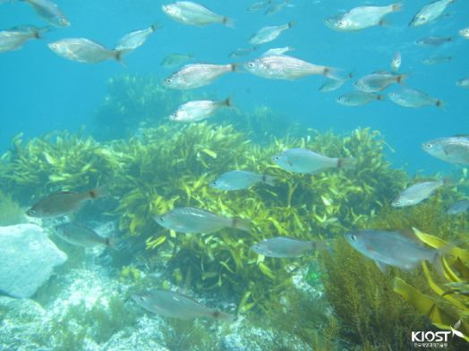

독도의 자연환경은 다양한 해안 생태계와 생물 다양성을 포함하고 있습니다. 섬 주변 해역은 다양한 어류와 해양 생물들이 서식하는 중요한 서식지로 알려져 있습니다. 또한 독도는 다양한 조류의 서식지로서도 중요합니다. 특히 해안 절벽에서 서식하는 해안 조류들이 많이 발견됩니다.
독도는 청정한 바다와 아름다운 해변으로 유명합니다. 이곳을 방문하는 사람들은 푸른 바다와 풍부한 해양 생물을 감상할 수 있습니다. 독도의 자연환경은 보호하고 유지해야 할 소중한 자원입니다.
